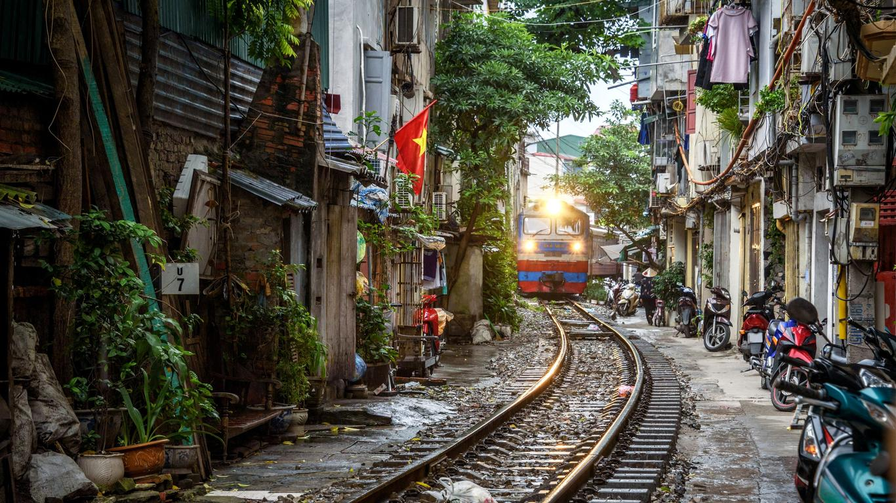
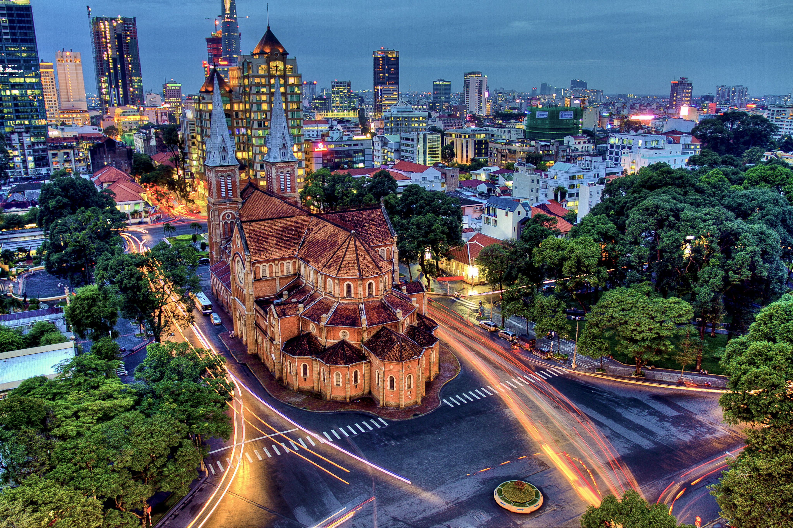

Northern provinces destinations
Although Northern Vietnam gets fewer visitors than Ho Chi Minh City and the coastal cities in the south,
this is a region of the country not to be missed. Not only is the region home to Hanoi, Vietnam’s capital,
it is also where you’ll find breathtaking bays, stunning rice terraces and unbeatable scenery.
Northern Vietnam’s cultural attractions are just as diverse ranging from the chaotic highland markets
to the hill-tribes in the far north. Narrowing down the many options to fit your itinerary can be tricky,
but this list can help point you to the region’s top destinations.
Ha Noi

If you only visit one place in Northern Vietnam, it will likely be Hanoi.
As the nation’s capital, Hanoi is an exhilarating blend of eastern and western culture.
French colonialism is visible through cuisine as well as architecture, particularly in the
French Quarter in the Hoàn Kiếm District. Hanoi is packed with incredible temples,
and a visit to the 11th century Temple of Literature is a must-do activity.
The side-by-side Ho Chi Minh Museum and Mausoleum are also major attractions in Hanoi,
and both are striking buildings from the exterior.
Ha Long bay
One of the best-known destinations in the entire country is Halong Bay.
Its reputation is well deserved, because it is truly beautiful.
Halong means descending dragons, which is indicative of the silhouette of the limestone
outcrops that poke out from the water. Day cruises or overnight boat trips are a spectacular
way to experience the beauty of Halong Bay and to see as many of the islands as possible.
In addition to Cat Ba, Quan Lan is a popular stop that is beginning to develop some tourism
infrastructure to accommodate a longer stay. You can go swimming, look for caves to
explore or find some of the more remote, uninhabited islands while cruising through Halong Bay.
Sapa

The mountainous town of Sapa is known for its culturally diverse population as well as its proximity to incredible scenery.
Sapa itself is home to the members of many hill tribes, including the Hmong, the Dao, the Muong and the Tay.
The town also overlooks the magnificent Muong Hoa Valley and its terraced rice fields, which are staggering to behold.
If you want to get an inside look at the local residents and their cultures, then head to Sapa for an overnight trek or a homestay.
You can hike out to the more remote villages and then spend the night, dining and learning from the hill tribe residents.
Middle provinces destinations
Scroll troll down the narrow streets of Hoi An’s Ancient Town, where timber frame shophouses
still appear the way they did centuries ago, and the streets are aglow in colourful lanterns each night.
Or acquaint yourself with the final days of the Nguyen Dynasty in Hue, where royal citadels,
tombs and temples are sprinkled along the tranquil Perfume River.
In between, modern Danang City offers a taste of some of Vietnam’s most luxurious resorts and
top golf courses -- as well as one of the country's best beaches. And a few hours away, Phong Nha’s
spectacular caves are the latest frontier for nature enthusiasts.
Hoi An
The second Unesco site on our list, Hoi An is one of the most important tourist destinations in the country.
An area once home to the Cham people, the small town grew in size and importance between the 15th and 19th centuries,
attracting a large number of Chinese and Japanese traders and becoming known internationally as a
top-tier Asian trading port. As a result, the well-preserved stucco buildings are awash
in both Chinese and Japanese influences.
Da Nang

Danang is the nation’s third-largest city and a nice alternative to the cultural capital of
Hanoi in the north and the economic centre of Ho Chi Minh in the south. Growing between the
eastern peaks of the Annamite mountain range and the tranquil waters of the East Sea, this
is one Vietnamese city that blends with its natural surroundings. For those interested in
motorbike riding, the Hai Van Pass – perhaps Vietnam’s most famous road – lies a short distance
to the north. The spectacularly fun zig-zag of tarmac traverses through lush jungle and
massive stone boulders as it skirts the sea.
Nha Trang
Nha Trang is best known for its beautiful sandy beaches. But visitors will also find amusement parks,
mud baths, golf, and the historic Po Ngar temple complex, as well as a variety of hotels and restaurants.
Adventurous foodies can sample bun cha ca, a soup made from sailfish and jellyfish, while most everyone
can appreciate the region's fresh seafood, noodles, and pancakes, which have mass appeal.
Hue

Hue, the nation’s ancient capital, might be the most historically fascinating city in all of Vietnam.
Well-preserved temples, pagodas and tombs lie around every corner. There’s so much history here that
it’s been named a Unesco site.
Da Lat
Many people have heard and known about Da Lat. However, not everyone knows the details
of Da Lat such as: where is Da Lat, what is Da Lat has, and where tourists should visit
in Da Lat. In this article, we will introduce details about Da Lat city so that everyone can know.
Southern provinces destinations
From island escapes to the non-stop action, southern Vietnam offers both vibrant
urban energy and mellow countryside.
Start off in the sensory overload that is Ho Chi Minh City, a metropolis where
humble mom-and-pop shops share street space with modern skyscrapers. Beyond the city
limits you’ll encounter the languid Mekong Delta, where life takes place on water and
farmland rolls out as far as the eye can see.
Not far away, Mui Ne lures holidaymakers with a laid-back beach vibe and reputation
as the kite-surfing capital of Vietnam. Offshore, islands such as Phu Quoc and Con Dao
will welcome you with pristine coastlines and untouched landscapes.
Ho Chi Minh city (Saigon)

The dazzling, frantic city of Ho Chi Minh is the most populous and most visited city in Vietnam.
A mix of history and heritage, and modern urbanisation it is easy to get lost in the fast pace and
overwhelmed by the surroundings. It takes a special kind of nerve to cross the street for the first time,
and yet the city draws you out, calling you to explore.
Ho Chi Minh City was formerly known as Saigon, and the more you explore the southern portions of
Vietnam the more you’ll hear it still referred to that way. It was the capital of South Vietnam and
the home of the government until the end of the Vietnam War.
Can Tho
Can Tho is the largest city in the Mekong Delta and the fourth largest city in Vietnam.
It is the perfect mix of traditional Vietnamese culture and lifestyle and modernised
tourist infrastructure, managing to maintain a relaxed,
local feel while catering to the many Mekong Deltas visitors.
Phu Quoc

Can Tho is the largest city in the Mekong Delta and the fourth largest city in Vietnam.
It is the perfect mix of traditional Vietnamese culture and lifestyle and modernised
tourist infrastructure, managing to maintain a relaxed,
local feel while catering to the many Mekong Deltas visitors.